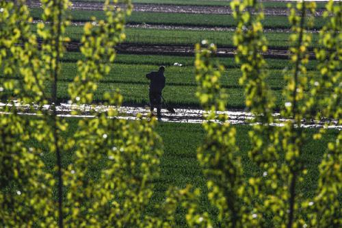
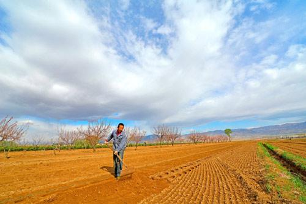
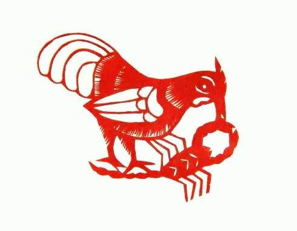

二十四节气的第六个节气是谷雨，也是春季的最后一个节气。此时太阳到达黄经30°，雨水增多，有利于谷类农作物的生长。今年的谷雨时间是4月20日，即农历丁酉年三月廿四日。
中国古代将谷雨分为三候：“第一候萍始生；第二候鸣鸠拂其羽；第三候为戴胜降于桑。”（《月令七十二候集解》）谷雨后降水增多，浮萍开始生长，布谷鸟追逐鸣叫，提醒人们播种，戴胜鸟落在桑树上，养蚕即将开始。谷雨时节正值暮春，是牡丹花开的重要时段，因此，牡丹花也被称为“谷雨花”，民间有“谷雨三朝看牡丹”的说法。
古人说“雨生百谷”，这是播种移苗、埯瓜点豆的最佳时节。俗话说“清明断雪，谷雨断霜”，谷雨节气天气温和，降雨增多，适量的雨水有利于越冬作物的返青拔节和春播作物的播种出苗，但雨水过量或严重干旱，会对作物造成危害。
和谷雨相关的农谚很多，如：“谷雨种棉家家忙”“谷雨有雨棉花肥”“谷雨时节种谷天，南坡北洼忙种棉”“谷雨栽上红薯秧，一棵能收一大筐”“连续阴雨不停，小麦易生锈病”“清明高粱谷雨花，立夏谷子小满薯”“清明麻，谷雨花，立夏栽稻点芝麻”“谷雨到立夏，就把小苗挖”“谷雨前后栽地瓜，最好不要过立夏”等等。
谷雨茶:南方有谷雨摘茶的习俗。谷雨茶也就是雨前茶，是谷雨时节采制的春茶。春季温度适中，雨量充沛，加上茶树经冬季的休养生息，春梢芽叶肥硕、色泽翠绿、叶质柔软，富含多种维生素和氨基酸，茶叶滋味鲜活，香气怡人，传说谷雨这天的茶喝了会清火、辟邪、明目。谷雨茶除了嫩芽外，还有一芽一嫩叶或一芽两嫩叶的。一芽一嫩叶的茶称为“旗枪”，一芽两嫩叶的称为“雀舌”，与清明茶同为佳品。一般来说，雨前茶价格比较经济实惠，水中造型好，口感上也不比明前茶逊色。据茶农介绍，真正的谷雨茶是谷雨这天采的鲜茶叶做的干茶，而且要上午采的，茶农一般留下自用或招待贵客。
禁蝎：清代民间已有“谷雨帖”灭毒蝎的习俗。山西临汾一带，谷雨这天画张天师符贴在门上，名曰“禁蝎”。陕西凤翔一带的禁蝎咒符，以木刻印制，说明“谷雨帖”的需求量很大。画面中央印有雄鸡衔虫，爪下还有一只大蝎子以及咒符。山东也有禁蝎习俗。清乾隆六年《夏津县志》记载：“谷雨，朱砂书符禁蝎。”禁蝎习俗反映了人们驱除害虫，渴望丰收、平安的美好愿望。
侗寨谷雨节：谷雨时节，肇兴侗寨有“吃乌米、打花脸、播稻种”的习俗，这是当地农耕生活与婚恋习俗的文化表达。谷雨节这天晚上，肇兴侗寨已订婚的男方家，会担乌米饭送到女方家作为定亲礼物，女方家将其分送亲友，以示女子即将出嫁。而曾经暗恋该女子的青年男子也会赶往其家门前，将盛饭用的竹篓扔到姑娘家里，等姑娘装满乌米饭后，再低着头进去取，以表达对姑娘的依恋与祝福。由于以前晚上灯光较暗、看不清人，姑娘把锅底灰抹在男子脸上，然后出门看，谁的脸黑就知道是谁在眷恋着自己。现在，只要谁家有姑娘，不管订婚与否，大家都会到姑娘家扔竹篓，讨要乌米饭，去的人越多，姑娘的家人越觉得有面子。当晚整个寨子如同狂欢，满寨子都是来取乌米饭的人，每个人的脸上都被抹花，谁的脸被涂得越重，表示谁的喜气越多。